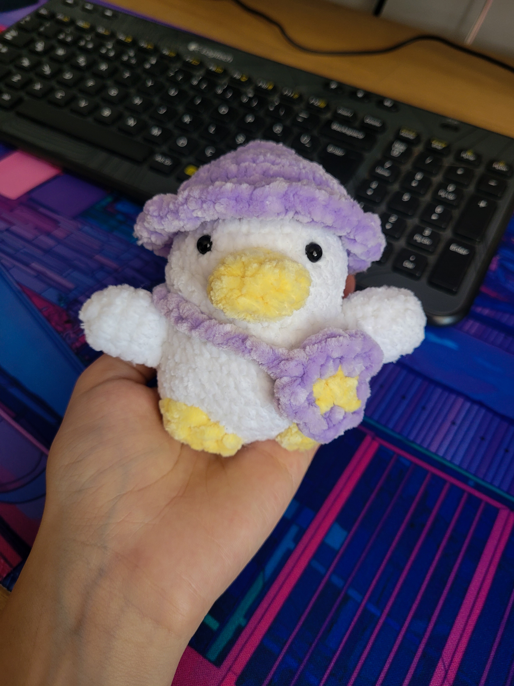

even though i messed up a little bit here and there, it turned out pretty cute in the end! after this one, i suddenly took a break from crochet for a while. i was still saving the cute patterns i saw around yet i wasn't making any move on getting my hands on any project. however, recently i've started working on a cute little mailman rabbit pattern and i'll share it once finished!